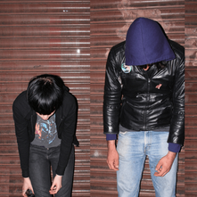

Crystal Castles was a Canadian electronic music duo formed in 2005, consisting of producer Ethan Kath and vocalist Alice Glass. They released four studio albums and were known for their chaotic live performances and unique sound before disbanding in 2017 following allegations against Kath.
Crystal Castles was my favourite band for so long, my Instagram biography featured the only lines "Crystal Castles", and "I Love Tequila".
It's hard that I ever loved a band as much as I love Tequila.
www.crystalcastles.comAs you can notice if you're a fan or do a quick research or ask a Robot to look this up for you,
not even one (1) song from the last record Amnesty(I) is on my Top 5 Songs.
This is because Alice Glass was the main/only lyricist of Crystal Castles
during the CC core era. Of course the lyrics played a crucial role in this overwhelming ensemble of such roaring, glitching, deconstructed dance music.
Chech out Alice Practice
and the Genius song lyrics here for a direct example of Alice being a diamond in the rough.
This song was even featured in the British teen drama Skins, in this heartbreaking scene.